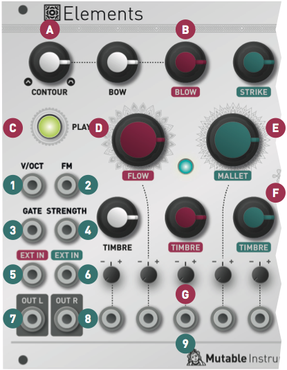
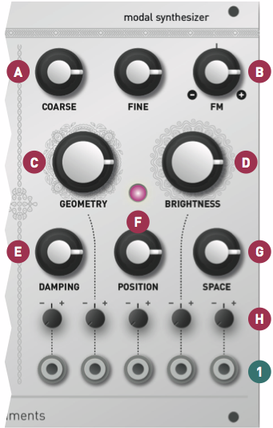

Overview
Elements is a full-blown synthesis voice based on modal synthesis - an under-appreciated flavour of physical modelling synthesis. With Elements, a sound is designed by specifying a resonant structure (plate, string, tube...), the properties of the material it is made of (stiffness, absorption...), and how the structure is excited to produce sound - struck, plucked, blown, bowed...
Elements is raw. The sounds of scratching scrape metal, or the wind in a PVC tube, not a symphonic orchestra.
Installation
Elements is designed for Eurorack synthesizer systems and occupies 34 HP of space. It requires a -12V/+12V supply (2x5 pin connector), drawing 10mA from the -12V rail and 130mA from the +12V rail. The red stripe of the ribbon cable must be oriented on the same side as the "Red stripe" marking on the printed circuit board.
Understanding modal synthesis
Modes in vibrating structures
Have you ever made a wine glass sing? And noticed that with just the right speed, the sound gets louder and louder? Or pushed a child on a swing with just the right timing to give her speed? The physical phenomenon at play, in both cases, is resonance. When we say that a physical system has a resonance at a particular frequency, it means that bringing energy to the system at this specific frequency will result in large oscillations - but if energy is brought at a lower or higher frequency, the oscillations will disappear. It is as if the system is responding to vibrations transmitted at a specific frequency, but is dissipating vibrations sent at the other frequencies. Just like a band-pass filter!
This phenomenon is present in strings, drums, or the air column in a flute. These systems do not have one single resonant frequency, but several, called modes. The shape of the instrument, and the material it is made of determine the modes. Modes are characterized by their frequency, their amplitude, and their Q (quality) factor - how narrow the resonant frequency peak is.
So what happens when we pluck a string, strike a drum or blow in a tube for a short moment? The short burst of energy of the blow/impact contains many frequencies. Some of these fall outside of the modes, and are absorbed. Some of these excite the modes, producing a stable, pitched sound. A sound will be perceived as pure if the modes have a high Q factor - in this case the spectrum has sharp harmonics, and everything else is absorbed. The sound will be more muffled or noisy if the modes have low Q. When the frequencies of the modes are in harmonic ratios, the sound is perceived as very musical and strongly pitched. When the modes are not located at integer ratios of the fundamental, the sound is perceived as metallic, and its pitch is ambiguous. If the burst of energy contains only low frequencies, only the lowest frequency modes will be excited. If the burst of energy contains very high frequency, it might be that some of the low frequency modes will not sound. So what we hear truly is the interplay between the modes present of the system, and the spectrum of the excitation which causes them to sound. The modes are like a mould, they represent a possibility of sound - it's up to us to fill them with an excitation signal!
Modal synthesis artificially recreates this phenomenon. The modes of a vibrating structure are recreated with a bank of band-pass filters - one band-pass filter per mode. The frequency of these band-pass filters determines the pitch (note) which will be heard. The Q factor (resonance) of these filters determines for how long the system can sustain oscillation after being excited, and how "pure" the sound is. The perceived timbre is a complex function of the frequency, Q, and gains.
To produce sound, this filter bank is excited by bursty/impulsive signals. These can be synthetic bursts of noise, clicks/sharp envelopes, or samples. In the rest of this document, we will refer to the filter bank as the Resonator, and the excitation signal generator as the Exciter.
Comparisons with other synthesis techniques
The idea of sending raw material into a filter might seem very similar to classic analog subtractive synthesis. But there is a big difference! In traditional analog subtractive synthesis, what determines the pitch (note) of the sound is the oscillator frequency (the raw material). The role of the filter is only to color it. In modal synthesis, the raw material is bursty and unpitched. What is truly responsible for the pitch of the note, and its timbre is the resonator. You might actually have already encountered this situation when "pitching" white noise by sending it into a resonant filter with high resonance.
The exciter->resonator combination might also remind you of formant synthesis - but once again, what gives speech its pitched component is the exciter (the vocal cords), not the resonator (the vocal tract).
A classic analog piece of equipment that used modal synthesis is the Roland TR-808 drum machine. The snare drum is synthesized by sending a narrow pulse into two band-pass filters. One could say that these two band-pass filters represent two modes of a snare drum; and that the analog pulse "striking" them is the exciter.
Describing a sound by a set of frequencies and gains should remind you of additive synthesis. Actually, one could say that modal synthesis is an implementation of additive synthesis, in which we have replaced all the oscillators by resonant filters. Unlike oscillators, the filters will not self oscillate, so they need to be "pinged" by an external signal.
Elements: Under the hood
To do modal synthesis, one needs to specify the frequencies, Q factors and gains of all modes. The traditional approach followed in academia consists in pre-computing them through a mathematical analysis of the instrument and its material (as done for example in the Modalys environment developed at the IRCAM). Some other research labs performed analyses on audio recordings of an instrument to identify the modes. These approaches can lead to very realistic sounds, but they are not very suitable to a modular environment - because they don't provide the ability to shape the sound at the twist of a knob or change in a CV.
Given that a rich, interesting sound can need up to 50 modes, providing individual frequency/amplitude/Q knobs would lead to a huge, barely usable module. Just like for additive synthesis, "one slider per partial" is a terrible UI. To solve this quandary, Elements does not use pre-recorded modal "signatures" of real materials, nor does it offer individual control on each mode. Instead, it generates synthetic signatures from a small set of parameters. We did our best to make sure that it was still possible to dial in a set of modes similar to those of real materials and structures - but of course, there's a large set of tones to explore outside of that! This philosophy is somewhat similar to those of algorithmic reverberators vs convolution reverberators - which trade realism and authenticity for tweakability!
To recreate excitation signals evoking different types of musical instruments, Elements' exciter section consists of three generators named after three possible actions one can do with an instrument:
- The BOW generator synthesizes the sound of a bow scratching a material. Depending on the bow pressure, this combines a raw, scratching, granular noise with a purer sound resulting from the interaction between the bow and the material.
- The BLOW generator synthesizes continuous, noise-like sounds reminiscent of blowing, breathing, wind...
- The STRIKE generator produces impulsive bursts and percussive noises for striking and beating the resonator.
Controls, inputs and outputs
Overview
Elements' front panel is divided into three sections:
- The control/performance section with the most essential inputs/outputs.
- The exciter section, in which the excitation signal is synthesized.
- The resonator section, which controls, under the hood, the frequencies, amplitudes and Q-factor of modes.
Control and exciter sections

A. Bow/Blow envelope CONTOUR. A simple envelope is applied to the sound generated by the BOW and BLOW exciters. This knob interpolates between several preset shapes for this envelope: short AD envelopes getting longer and slower, morphing into slower ADSR envelopes, fading into faster AR envelopes.
B. Excitation mixer. The BOW knob controls the amplitude of scratching/bowing noise sent to the resonator. This is more than a mere gain: this control simulates an increase in bow pressure, causing a brighter and noiser sound. The BLOW knob controls the amount of granular blowing noise sent to the resonator. Finally, the STRIKE knob controls the amount of percussive noise sent to the resonator. Note that when this knob is set to a high value (past 2 o'clock), the percussive signal is sent to the resonator, but also "bleeds" on the main output signal for a more biting percussive sound.
C. PLAY button. Press and hold this button to trigger the exciter and its envelope. This is equivalent to sending a positive gate to the GATE input.
D. Air FLOW of the BLOW generator. This parameter can be described as a kind of wavetable scanning through various colors of noise. Automatically controlling this parameter with a CV (for example, from a LFO), will create a changing texture reminiscent of a turbulent air flow.
E. MALLET type. This parameter controls the type of percussive noise produced by the STRIKE generator. Various synthesis models are available, and this knob morphs through them. Over the course of the knob, you will find:
- Actual samples of hammers, mallets, sticks.
- Physical models of mallets, played with or without damping.
- Physical models of plectrums, played with varying picking speeds.
- Physical models of particles bouncing on a surface.
F. The BOW generator TIMBRE knob controls the smoothness or granularity of the bow material. The BLOW generator TIMBRE knob controls the pitch/granulation rate of the noise generator. Finally the STRIKE generator TIMBRE knob controls the brightness/speed of the percussive excitation.
G. Attenuverters for the CV inputs.
1. V/OCT input. This CV input controls the fundamental frequency of the resonator, and thus, the perceived pitch of the note.
2. FM input. This CV input provides an additional modulation source for the fundamental frequency.
3. Exciter GATE input. This enables the exciter. When the GATE signal goes high, the percussive generator produces an impulsive sound, and the envelope starts its course - progressively unveiling the scratching of the bow and the blowing noise.
4. STRENGTH CV input. This CV input works as a VCA amplifying or attenuating the excitation signal. A positive CV will boost the signal, a negative CV will attenuate it. The scale is 3dB/V, with a maximum attenuation/gain of +/- 15dB.
5. External IN 1. The audio signal sent to this input goes through the same path as the blowing noise - it gets diffused, amplified by the envelope, then amplified by the STRENGTH VCA. It finally reaches the resonator.
6. External IN 2. This second audio input is unprocessed and directly sent to the resonator.
7. 8. Dual-channel audio OUT. Depending on the position of the SPACE knob, this consists of either the individual exciter/resonator components, or a true stereo pair.
9. Exciter CV inputs.
Resonator section

The main frequency of the sound is controlled by the COARSE / FINE knobs, combined with the V/OCT and FM CV inputs.
A. COARSE frequency, adjusted by semitone increments. This control spans 5 octaves. FINE frequency, unquantized, spannning a range of -2 to +2 semitones.
B. FM input attenuverter. This knob controls the amount and polarity of modulation applied to frequency from the FM CV input jack. It has an exponential scale - providing very progressive attenuation as it is moved away from its central position.
C. GEOMETRY. This essential parameter controls the geometry and stiffness of the resonating structure. It goes from plates, to strings, to bars/tubes, to bells/bowls.
D. BRIGHTNESS. This parameter controls how muted the high-frequency modes are. Low values simulate materials like wood or nylon. High values simulate materials like glass or steel.
E. DAMPING controls how quickly energy dissipates through the material. Modulating this parameter by CV can recreate the effect of damping or muting the sound by blocking the vibrating surface with the hand.
F. POSITION controls on which point of the string/surface the excitation is applied. Applying the excitation right in the middle of the surface will cause, by symmetry, the even harmonics to cancel each other, resulting in a "hollow" sound reminiscent of a square wave. This setting will remind you of the PWM control on a square oscillator - or of the comb-filtering effect of a phaser.
G. SPACE controls the stereo width and amount of algorithmic reverberation applied to the sound. When this knob is set to its minimum position, one output channel contains the exciter output, and the other channel the resonator output, and it is up to you to mix and spatialize them. As SPACE increases, a stereo effect is created by picking up the vibrating surface's sound at two different positions. Increasing SPACE increases the angle between the two microphones. Past 12 o'clock, SPACE controls the amount and decay time of an algorithmic reverberator applied to the resonator signal. Note that applying a very high CV to the SPACE parameter while it is in maximum position will trigger a "freeze" effect - preventing the reverb tail from decaying. This can be creatively used for overdubbing layers of notes to create chords.
H. Attenuverters for the CV inputs.
1. Resonator CV inputs.
Advanced topics
Calibration procedure
The module is factory-calibrated using precision voltage sources. Follow this procedure only if you want to compensate for inaccuracies in your CV sources, or if your module has lost its calibration following a firmware update or fault.
To calibrate the unit:
- Disconnect all CV inputs.
- Connect the note CV output of a well-calibrated keyboard interface or MIDI-CV converter to the V/OCT input.
- Set all attenuverters to their minimum position (7 o'clock), then hold the PLAY button for five seconds. This is the "secret handshake" to enter the calibration procedure. The exciter LED blinks to indicate that calibration is in progress.
- Send a voltage of 1V to the CV input.
- Press the PLAY push-button. The resonator LED blinks.
- Send a voltage of 3V to the CV input.
- Press the PLAY push-button.
- Calibration is done! To avoid entering the calibration mode by mistake, make sure that at least one attenuverter is moved to another position.
Firmware update procedure
Unplug all CV inputs/outputs from the module. Connect the output of your audio interface/sound card to the first EXT IN input. Set the BLOW knob to 12 o'clock. Power on your modular system with the PLAY push-button pressed. The PLAY LED will blink.
Make sure that no additional sound (such as email notification sounds, background music etc.) from your computer will be played during the procedure. Make sure that your speakers/monitors are not connected to your audio interface - the noises emitted during the procedure are aggressive and can harm your hearing. On non-studio audio equipment (for example the line output from a desktop computer), you might have to turn up the gain to the maximum.
When you are all set, play the firmware update file into the module. While the module receives data, the exciter and resonator LEDs act as a level meter. Signal reception is optimal when the resonator LED is barely lit. Try adjusting the BLOW knob to change gain. When the end of the audio file is reached, the module automatically restarts - if it is not the case, please retry the procedure.
In case the signal level is inadequate, the LEDs will blink with an alternating pattern. Press the encoder and retry with a higher gain. If this does not help, please retry the procedure from another computer/audio interface, and make sure that no piece of equipment (equalizer, FX processor) is inserted in the signal chain.